Note
Table of Contents
1. some books
1.1. the blind spot by Girard
1.1.1. chapter 3: LK
- part 1: starting up, rules and more
- the problem with Modus Ponens
There are actually problems with Modus Ponens. Modus Ponens is actually very like cut rule. Why? Because in the view of proof finding, we start from nothing: if we want to proof 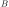, then probably we have to image such 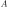,
holds. "We have to image such ". And this is the problem.
- generalization
From 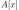 to 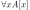. And this is called generalization. What is wrong with it?
- problems with hilbert's formalism and system
Anyway, the two rules make the Hilbert's logic system non-usable, because it has no good structural property. And thus even the slightest automated deduction is impossible.
It is said that hilbert's system is a garbage, in the sense of equivalence, it does no more than other system but hinder our understanding.
- deduction theorem
if is provable in system 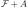, with closed, then is provable in 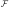.
The proof is not provided somehow.
- seqeunt and hypothesis
I don't really know the intuition behind the idea that LK is better than Hilbert's, but it seems that it is because of the introduction of hypothesis.
Anyway, the problem of "let useimagine a premise " can be solved with two tools:
- LK
- cut-elimination.
- sequents
A sequent is expression of 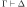, where 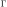 and 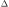 are all finite sequences of formulas.
- the notion of context
We use more notion of context, in order to make a difference from other stuff. The reason we are doing this? I don't know.
But anyway, 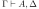 for example, the context of it is 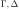, one can write as 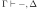
- the intuitive "semantic" of LK
![\[
\Gamma \vdash \Delta
\]](./ltximg/org-tex-943230291f0673a9465e2e0a0f13ddc993809e7d.svg) for this expression, it means "if all the formulas in are correct", then "one of the formula in is correct". By the way, the symbol 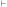 is called "turnsile".
for this expression, it means "if all the formulas in are correct", then "one of the formula in is correct". By the way, the symbol 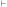 is called "turnsile".
The symbols used in LK are:
- left commas: means «and»
- right commas: «or»
- turnsiles: «implies»
- special sequent in LK
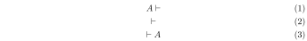the first one means leads to nothing, which means is contradictory, and 2 means an expression like 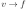, which is bad, 3 means is true without hypothesis, which is to say is tautology.
The proof of second is important, given by Gentzen, saying that LK is consistent.
- negate of
I think we have this 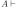 then 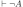. The precise definition is not here tho.
- rules for LK
The content of LK is the rules. The rules are divided into three groups, we can actually only introduce those important ones, because introducing those about the connectives is always not necessary.
- the identity group
There are two rules in this group they are called identity and cut rule 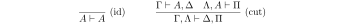 There are special cases for cut rules, because of the context. They are 1. modus ponens 2. transitivity 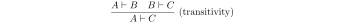 cut rule is most important one.
- Hauptsatz of Gentzen
Hauptsatz is called the cut-elimination. So basically it says that cut rule is redundant. Hauptsatz means big in Germany. So it can be called the main theorem.
- structural group

- contraction and weakening
The rules seem intuitive at first, but there are spaces for we to discuss.
See page 61.
- logical group
The logical group is about those connectives like 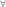 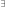 and so on. Here is the deal
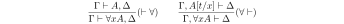
there are important constrains for the rules:
- for 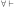 and 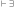, should not use 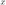.
- 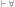 and 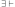, as is introduced, there should be no appearance of in context of , that is .
And of course, there are some other rules for 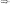
You may need some time to process this one.
here 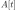 is the same as 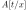, the latter is more precise. Why are there two symbols because those are symbols used separately in book « proof theory and logic complexity » and « The Blind Spot ».
- eigenvariable
The notion eigenvariable is not unambiguous.
Since we introduce a variable in , we don't want the premise has in it. Thus the premise is written as 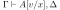.
The thing is to avoid the notion of "bound variable".
- laxist notation of eigenvariable
Here we have the laxist notation when confronting the variable in the rule . This is because "bound variable" is sometimes confusing.
We say that when introducing , the premise has no occurrence of in it. becomes 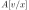 using a placeholder variable that does not appear anywhere.
Significant details really.
- the identity group
- right hand calculus of LK
The symmetry of LK makes it possible to decrease the size of rules significantly.
![\[\begin{aligned}
&\frac{}{\vdash \neg A, A}\ (\mathrm{id})
& %
& \frac{\vdash \Delta, A\quad \vdash \neg A, \Pi}{\vdash \Delta, \Pi} (\mathrm{cut})
\\
\\
& \frac{\vdash \Delta}{\vdash \tau (\Delta)}\ (X)
& \frac{\vdash \Delta}{\vdash A, \Delta}\ (W)\quad\quad
& \frac{\vdash A,A,\Delta}{\vdash A, \Delta}\ (\mathrm{con}) %
\\
\\
& \frac{\vdash A, \Delta}{\vdash A \lor B, \Delta}\ (\vdash \lor)
& %
& \frac{\vdash A, \Delta\quad \vdash B, \Delta}{\vdash A\land B, \Delta}\ (\vdash \land)
\\
\\
& \frac{\vdash A, \Delta}{\vdash \forall x A, \Delta}
&
& \frac{\vdash A[t/x], \Delta}{\vdash \exists x A, \Delta}
\end{aligned}\]](./ltximg/org-tex-b4d8771763cb39d2a8cc1055f2442034e4d26e35.svg)
- the problem with Modus Ponens
- part 1.5: some exercises
- some basic
Check for 1.1.1.1.11.5
- prove that it is legit to restrict the id axiom on atom formula
that is, if axioms 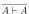 holds only when is atomic, the system is still legit.
Proof is simple. We use induction on formula
- without structural rules, set-based sequent calculus
Structural rules are exchange, weakening and contraction. See 1.1.1.1.11.3
If we exclude those rules, we have set-based sequent calculus, where we treat as set! This can be viewed as a variation of sequent calculus.
How can I prove this?
- signature
Here is the def of signature of an occurrence of formula in . 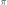 is an occurrence of .
- if is atomic, is pos.
- if is pos in , then it is so in 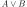, , , 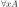, 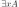.
- if is pos in , then it is neg in
 and .
and .
We need also def signature of of in a sequent . as one can imagine, if is pos in , then is neg in sequent. if is pos in , then is still pos in the sequent.
Prove that cut-free proofs preserve the signature.
Proof. Obvious.
- 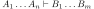 leads to
The proof is actually obvious. I think.
- some basic
- part 2: cut free and subformulas properties
- Hauptsatz of Gentzen
The theorem can be stated as follow:
Every theorem in LK or LJ has a cut-free proof.
- the proof given by Gentzen
The proof of Hauptsatz is not worth trusting. It is tedious and hard to follow. The idea is that there are many key cases he can list, where the cut can be push upward. In this process of pushing and potentially expanding the proof size, we can prove that the process is decisive.
And thus we can conclude that we can construct a cut-free proof.
- subformula properties
- subformulas
if is atomic, then the subformula of is itself and nothing else.
if is of form , then the subformula of is itself and subformulas of and .
if is of form or , then the subformula of is itself and the subformulas of for some term .
- the theorem
The cut-free proofs of a sequent are consisted of sequents made out of the subformulas in and .
It is obvious that if there is quantifiers (, ) in the , there are infinite number of subformulas. The proof searching seems to be indecisive. However, …
- subformulas
- Hauptsatz of Gentzen
- part 3: more
- second order
- the notation
We use as variable for predicate. But we have some different notations.
- If is arity 1, then it is supposed to be for term . But we wrote , just like is a set.
- If is a formula, and we use it to create a predicate (arity 1). Just like a set, whose elements are all that satisfied .
I don't really know why we do this. I think this implies an relation with another expression of second order predicate logic. That is we treat like a set. For example, we say that is the set of natural number, and thus we have: where we say is a 1 arity predicate, and means « is natural number».
- rules in second order
where should have the same arity of , in .
- the notation
- second order peano arithmetic
We write a Dedekind integers for example: How to understand this one, we treat as a simple propostion for example . is , and is . Then we may have
- comprehension schema in second order
This is something that I don't understand, about the terms that Girard was using.
We start with , how can we get What he said is we use a rule , on the abstract term
Okay, if is then means actually . And here we should look at . We assume that there is a in . Then seems very legit. The overall process is rewrite as , and then we apply , with result .
Okay, what the fuck is this schema used for?
- LJ is a subsystem of LK
LJ, where all the sequent where consists of at most one formula, is a subsystem of LK.
LJ actually enjoys Hauptsatz and subformula properties.
- decisiveness of LJ
The introduction of LJ is owing to an obvious reason, the LJ is relatively less expressive (where law of middle excluded can be derived), but LJ is fucking decisive.
- second order
1.1.2. chapter 4: LJ
- intuitionistic sequent
A intuitionistic sequent is of form , where is a formula.
That is LJ is a subset of LK, with the restriction of there is one and only one formula one the right hand side.
- 0 in the LJ
The right hand side can not be empty but can be . There is rule of the introduction :
- rules
id
structural
logical group is 略
- Gödel's translation
- use induce
This is trivial in LK, but not in LJ.
- the intuition of «hole» in LJ
in the introduction of , we notice that when migrating to the left side, we leave a «hole» one right side that is . And respectively, when migrating to the right side, it occupies the «hole».
- double migration to prove
A migration of a formula will add a to it. So a double migration on right hand side of will naturally lead to .
in the classic logic we can prove , this is because we can do a double migration on the left hand side of .
Although it is not possible to prove , is provable.
- the Gödel's theorem
is classically provable (provable in LK) iff is intuitionistically provable (provable in LJ).
where we get by adding to the front of every atomic formulas, quantifiers and connectives:
- ,

Proof is simple. And a sort of completeness is achieved in LJ.
- use
- Hauptsatz in LJ
- the decidability of LJ
there is a remark that I don't understand in page 74.
- intuitionistic existence and disjunction
LJ has a remarkable property:
 if is provable, then either or is provable.
if is provable, then there is an appropriate , such that is provable.
if is provable, then either or is provable.
if is provable, then there is an appropriate , such that is provable.
- the myth around the fine property of LJ
there is some misunderstanding about the fine property above: if we can is provable, why bother to prove ?
From to either or , this is explicit only if you use cut-free proof system, but a cut-free proof is so tedious and something unnecessary. We may implicitly prove (with cut) without knowing which one is true. We know only after cut-elimination!
Keep in mind that the propery is the corollary of Hauptsatz.
- explicitable logic
LJ is not an explicit logic (it is if cut-free), but we can say it is explicitable.
- the decidability of LJ
- NJ
- conclusion and hypothesis
The begin of structure like The structure needs more clarification. It is more like a tree but upside down. The root is , and there are multiple leaves. The leaves are called hypothesis. The here is the set of leaves in the proof tree.
is the proof of , where the hypothesis and the conclusion itself.
- introduction of
The introduction of introduce means the is marked as discarded. So one of the subproof (whose conclusion is ) is marked as used.
Let us say the proof of use hypothesis , and the proof of use hypothesis , here the proof of use hypothesis , because the proof of is abandoned. This becomes clear when you translate NJ to LJ.
- conclusion and hypothesis
1.1.4. chapter 6: system F
- Intro
System is like the second order lambda calculus. We introduce another set of notation and .
is read as . So in system F, the notation is
So an term in system F could be
And of course there are many other notations for this system F.
- TODO the expressive ability of system F
The ability of system is stunning. Let us see how Girard uses system F to express all the connectives like and .
- TODO free structure using system F
We can use system F to create some type (structure). I still don't really know why they are called free structure.
1.1.5. chapter 7: CCC
- pole and polar
- def
Given a binary operation , and a subset of , namely (the pole), we can give the polar set with the respect to a subset of , namely :
- some properties
We write as . Don't want to bother to type langle and rangle.
- 1.
Proof. if we need to prove that , .
Let us look at , . So of course is valid.
- 2. is the smallest polar set that containing .
Proof. we need to prove that if is polar set that containing , then also containing a polar set .
Let us say that , here . All we have is that if then , which is . We need to prove that if then . Or we can prove that if then . Let us go with the latter:
If , then , that .
How can we prove that ? Let us say that if , then therefore , . So we know that in is
notin .Consequently, suited that there is a , . However, at the same time, , then for also include those , that . A contradiction is derived from .
The formula is that if and if there would be a contradiction.
So which implies . And because we don't have pre-set condition of ,
The smallest polar set is . The equation holds because is finite, the number of is limited.
- 3.
Proof. is enough to prove . And then we need .
We say like this is a polar set, then .
Let us say we need . Or we can say , then we need .
, then , thus (because ) , which .
- 1.
- connection
First one:
Second one:

Third one:
![\begin{prooftree}
\AxiomC{ }
\UnaryInfC{\(\neg A\vdash\neg A\)}
\AxiomC{ }
\UnaryInfC{\(0 \vdash 0\)}
\BinaryInfC{\(\neg A, \neg \neg A \vdash 0\)}
\UnaryInfC{\(\neg A\vdash \neg \neg\neg A\)}
\UnaryInfC{\(\vdash \neg A \Rightarrow \neg\neg\neg A\)}
\AxiomC{ }
\UnaryInfC{\(A\vdash A\)}
\AxiomC{ }
\UnaryInfC{\(0 \vdash 0\)}
\BinaryInfC{\(A, \neg A \vdash 0\)}
\UnaryInfC{\(A\vdash \neg\neg A\)}
\doubleLine
\UnaryInfC{\(A, \neg\neg\neg A \vdash 0\)}
\UnaryInfC{\(\neg\neg\neg A\vdash \neg A\)}
\UnaryInfC{\(\vdash \neg\neg\neg A \Rightarrow \neg A\)}
\BinaryInfC{\(\vdash \neg A \Leftrightarrow \neg \neg \neg A\)}
\end{prooftree}](./ltximg/org-tex-890cf764b1bc3734ca848c04b1cf9f77c1323432.svg)
- translation!
- is
- is
- is
- is "we can find a way to use the left hand side variable to get one right hand side variable"
Examples of translation
to
We can find a way to use to get a : we just use identity function.
to
We can find a way to use and to get a : we just use
to defined as set of all function that maps to
The element in is a way to map to , by
- def
- TODO three layers
what the hell is this?
- category
- CC
- categories
is a cat.
- Obj: or (we prefer the former)
- Hom: or
- composition: and , then in .
- associativity
- id: there is always in .
- Functor
A functor from to is two collections of mapping
- From to
- satisfy that is mapped to in
- From to
- satisfy that
Also the diagram commutes:
- From to
- natural transformation
Functors naturally forms a category where are all the functors, and the morphisms are called natural transformation.
natural transformation is a transformation between functors. Here a natural transformation from .
For every in , say , there is morphism in , that makes the diagram commutes:
- cartesian product
First we need the definition of cartesian product. Here we use universal properties.
A cartesian product is a terminal object in followingly constructed categories:
First. Obj in this category is defined as an object in , and a pair of morphisms in
 and :
and :
Second. Morphism from (with and ) to (with and ) is defined as a morphism from , such that the diagram commutes:
![\begin{displaymath}
\begin{tikzcd}
C \arrow[rrd, bend left, "f_{1}"]
\arrow[rdd, bend right,"f_{2}"]
\arrow[rd, "h"] & & \\
& D \arrow[r, "g_{1}"]
\arrow[d, "g_{2}"] & A\\
& B
\end{tikzcd}
\end{displaymath}](./ltximg/org-tex-7fae1f453b3e17667f4de83fa2a2349dc52113e2.svg)
Okay we can not define the cartesian product in the normal sense:
we can prove that (in the sense of set theory) together with and are the terminal object in the category above, that is for every obj , there is unique Hom from to .
- cartesian and product
In the sense of set theory, product is cartesian product. However, not every category is , so cartesian product as a concept in set theory does not apply in other thing.
Product is sometimes called direct product. There is also direct sum. And there is also tensor product. They are all different things. One can check for sometime articles. In physicist call tensor product as «direct product», absolutely brain dead behavior.
- cartesian category
A cartesian category is such category where the terminal obj described above has been given to us: for every pair of obj , there is in the category.
- before diving into CCC
Why we need cartesian category. Because we treat the conjuction of formula as in the sense of set theory.
We need a category where are "formula", should also be "formula".
- categories
- CCC
- before diving into CCC
so in the section above, we need CC for such rule: , in then in .
Here we have another one, we call exponential: , in , so is in , however, using the notation from set theory, is written as .
- exponential
We defined a cat: Obj: diagram:
Hom: commutative diagram, where is important:
As you can guess together with (evaluation) is the terminal (to be exact, the terminal is noted as and if they exist).
- before diving into CCC
- examples of CCC
- . Duhhh, obviously.
- Scott Domain. We can use sequent calculus to define Scott domain instead of topological spaces.
- Scott Domain is crucial for understanding coherent space in the future section.
- scott domain described using logic
A scott domain is a pair , where is a set, is a set of axioms made of and something like (notice this one is empty). Also these axioms are consistent, that is with the logical rules, structural rules and cut rule, one can not prove .
A
coherentsubset of is such subset , that is consistent.A
saturatedsubset is suchcoherentsubset , that can not be «expanded», that is the corresponding axioms can not prove a where is outside of .As a result, for every coherent set , there can be a «closure», noted as . And here we use a new notation
 which means is a saturated subset of .
which means is a saturated subset of .
A morphism from to suits that:
- then
- then
- logic in a CCC
A syllogistic's view: view as the sequent . A proof that proves the sequent is a morphism in . And to generalise the idea of , we introduce product.
Left rules: what?
 -conversion
-conversion
We want find something unique in exponential. Given and an object , we want to find a morphism from to . Let us say it is , we can have an equation for , provided with the diagram:
the equation:
if we now treat as something we are more familiar with, we have this immediate reduction or
-conversion
Remind me of what means in the first place. When given a function from to , we have a from to , which means that we can factor a function to a and an evaluation function . How does that transfer from to this ?
So a here is function from to . We can use to construct a to . And then we use this constructed result, we can then use to find a . Who is exactly itself, since we know this is a CCC.
Okay I don' know what the hell I am say.
- surjective pairing in category
the surjective pairing is below equation:
where is a variable of type , of form , where and are of type and respectively.
here we use the idea of unicity above, we consider the unique Hom as an unknown variable, we can have an equation, provided by the commutative diagram:
![\begin{displaymath}
\begin{tikzcd}
C \arrow[rrd, bend left, "\pi_{1}\cdot h"]
\arrow[rdd, bend right,"\pi_{2}\cdot h"]
\arrow[rd, "h"] & & \\
& A\times B \arrow[r, "\pi_{1}"]
\arrow[d, "\pi_{2}"] & A\\
& B
\end{tikzcd}
\end{displaymath}](./ltximg/org-tex-4584695e35c13f5b7cda0e13a8ee4b8ef853d787.svg)
the equation is:
here we can learn about the corresponce a little bit more, where a formula in is represented as a hom from
, where is a random object, and is the respective formula. And very true that a which is hom in , is treated as an variable for the type .
Here is an obvious variable for formula , which is constructed via projecting from .
1.1.6. chapter 8: coherent spaces
- the definition of coherent spaces
A coherent space has some components:
- web: a underlying set namely .
- coherence: a reflexive and symmetric relation. I don't know how to typeset the symbol yet.
- clique: a clique , is a subset of , made of pair-wise coherent points.
- the coding of scott domains
An example here is the cartesian product, namely .
And we treat the space as a space with four point, namly: , and and . The points are pointwise coherent besides and , and we consider a mapping from the coherent space where the objects are cliques—the set whose elements are point-wise coherent.
the coding is about representing the . We need some redundancy. we need to list all the in the first equation above. Because in the definition of coherent space, if then something is true also for . So it becomes
This is the coding of . The redundancy is need. I don't really know what is section is talking about.
- stable function and stability
here and are two coherent spaces, a stable function from to satisfies:
Cliques: if then Monotonicity: if then Continuity: Stability: if then
Stable order between the stable functions is defined: Berry order: iff for all , .
What the hell is this one?
1.1.7. chapter 9: linear logic
1.1.8. supplements
- directed sets
A collection of sets is said to be directed, if the sets are indexed by a partially ordered set.
For example , , where is a partial order set.
- logic complexity, first order
Logic complexity is about something like first order, second order; about the logic hierarchy, logic classification.
- unbound quantifiers
Unbound quantifiers refer to quantifiers whose domain is not specified. But I think we can understand it as quantifiers whose domain is unbound, which is infinite.
- prenex
prenex form is of form where is quantifier free. prenex is not that useful.
- and
The sb of the above notations is about the alternation of unbound quantifiers. I don't really know what is an unbound quantifiers. But zero alternation means no quantifier.
One alternation means the quantifiers are the same. For , the quantifer can only be , and for . Thus all formulas in and are respectively of form:
![\[
\exists x\sb{1}\dots\exists x\sb{n}A,\quad\quad
\forall x\sb{1}\dots\forall x\sb{n}A
\]](./ltximg/org-tex-394e51c591d0fa04d99d53d6c969653983e8faab.svg) where is -free. So you know alternation means something like
where is -free. So you know alternation means something like
- sets
Here we understand as a collection of sets. A set is a set that satify: where is a -free quantifier and can not be arbitrary.
and sets are respectively semi-decidable and co-semi-decidable.
semi-decidable means is decidable if . co-semi-decidable means is decidable if
 .
.
So a set is decidable, since .
- a classic example of set
(given by Copilot)
Sure! A classic example of a set is the set of even numbers.
- The set of even numbers can be defined by the formula: . This shows that the set of even numbers is in .
- The set of even numbers can also be defined by the formula: . This shows that the set of even numbers is in .
Since the set of even numbers can be characterized by both an existential and a universal quantifier, it is in the intersection of and , making it a set.
- unbound quantifiers
- arithmetic RR
RR is the child of formalism. And we introduce and some constant .
Arithmetic system right now is boring because it is merely formalism shit.
- group: equality
There rules are used to prove .
- group: definitions
These can prove that if two terms are the same number, then is provable.
the 3rd and 4th peano axioms
These group can be used to prove that if are different number, then is provable. Also, these two things shamelessly assume an infinite domain, otherwise could be proved.
- group three: a last axiom
what is this one used for? Let us check what Girard says:
the last axiom of a slightly different nature from the rest, since it is not needed for incompleteness: the representation of expansive properties is handled by the definition axioms. It is used in the representation of recursive functions and therefore in the algorithmic undecidability of RR and all its consistent extensions. It is also used in the Rosser variant.
- group: equality
- PA
- induction schema
Let us check how to express induction schema: here second order peano arithmetic, we have relative description for induction schema, where we have that if is a nat number, then is provable.
- the definition of PA
Peano's Arithmetic is derived from , added with induction schema. Here is not arbitrary.
- induction schema
- satisfiable
A formula is satisfiable if there is an assignment that makes it true.
An assignment for a formula is a set of assignments (the process of give value, some people use validate) for variables in the formula. After giving value to variables, we can now decide the true/false of the formula (by writing down the truth table).
A (propositional) formula is unsatisfiable means that there is no way for it to be true.
Remark: The definition of satisfiable can be extended to predicate logic, where instead of assignment, we say model. I just don't remember the terminology.
- there is an assignment makes it true
There is an entry in truth table that is true.
- ground terms
Ground terms are terms that have no variable.
- ground instances
A ground instance of a formula is a formula derived from , where all the variables are replaced with ground terms.
- alternative explain for Herbrand's theorem
An formula has a Herbrand's model means that there are a set of ground terms that makes true.
- simultaneous substitution
A can be applied to a formula or expression , but anyway I prefer for a formula, for a set of formulas.
means carry the substitution to every formulas in . We can compose those . For example, means carrying first and then .
- unifier
A unifer for a set of expressions , is such , that
- most general unifier
The most general unifier, a.k.a., m.g.u. is like the smallest unifier. A m.g.u. noted as , suit that which is a unifier, there is a such that
- unification algorithm
unification algorithm is an effective algorithm used for search m.g.u.
Using the algorithm, we will find a mgu satisfies that for all unifier holds.
- herbrand's theorem and cut-elimination
Herbrand’s Theorem: This theorem provides a way to transform a first-order logic formula into a purely propositional form.
It states that if a first-order formula is universally valid, then there is a finite set of ground instances (instances with no variables) of its clauses that are propositionally valid.
How they are related is that they both transfer something undecidable to decidable.

1.2. HoTT
1.2.1. the intuition of dependent type theory and hott
A path of two point in topology is , a "path" for a path to another path is homotopy, which is of type
can be called a two-dimensional path, and is a one-dimensional path. We can say a point is a zero-dimensional path.
This formulate a simple kinds of dependent type theory, we say are equal if and only if there is a path from to . This kind of "equal" can be equated with another "equal".
First we have , if there is a path from to , where they are point in . And then we say if we have a homotopy , where are "points" in .
1.3. categorical logic and type theory
1.3.1. chapter 0
This introductory chapter is divided into two parts. It first discusses some generalities concerning logic, type theory and category theory, and describes some themes that will be developed in this book. It then continues with a description of the (standard) logic and type theory of ordinary sets, from the perspective of fibred category theory–typical of this book. This description focuses on the fundamental adjunctions that govern the various logical and type theoretic operations.
1.3.2. 0.1 Logic, type theory, and fibred category theory
- part one: logic over a type theory
A logic is always a logic over a type theory. This statement sums up our approach to logic and type theory, and forms an appropriate starting point. It describes a type theory as a “theory of sorts”, providing a domain of reason-ing for a logic. Roughly, types are used to classify values, so that one can distinguish between zero as a natural number and zero as a real number , and between addition on natural numbers and addition on real numbers. In these examples we use atomic types and and composite types and obtained with the type constructors for Cartesian product, and for exponent (or function space). The relation as in , is the inhabitation relation of type theory. It expresses that is of type , i.e. that inhabits . It is like membership in set theory, except that is untyped, since everything is a set. But a string is something which does not inhabit the type of natural numbers. Hence we shall have to deal with rules regulating inhabitation, like
The first rule is unconditional: it has no premises and simply expresses that the term O inhabits the type . The second rule tells that if we know that inhabits , then we may conclude that also inhabits , where may be read as successor operation. In this way one can generate terms, like inhabiting the type .
In predicate logic one reasons about such terms in a type theory, like in
This gives an example of a proposition. The fact that this expression is a proposition may also be seen as an inhabitation statement, so we can write
using a type Prop of propositions. In this particular proposition there are no free variables, but in predicate logic an arbitrary proposition may contain free variables. These variables range over types, like in:
We usually write these free variables in a “context", which is a sequence of variable declarations. In the examples the sequence is a singleton, so we write
The turnstile symbol separates the context from the conclusion: we read the sequent as: in the context where the variable is of type , the expression is a proposition. Well-typedness is of importance, since if is a string, then the expression does not make sense (unless one has a different operation on strings, and one reads '' as a string).
This explains what we mean with: a logic is always a logic over a type theory. Underlying a logic there is always a calculus of typed terms that one reasons about. But one may ask: what about single-sorted logic (i.e. single-typed, or untyped, logic) in which variables are thought of as ranging over a single domain, so that types do not really play a role? Then one still has a type theory, albeit a very primitive one with only one type (namely the type of the domain), and no type constructors. In such situations one often omits the (sole) type, since it has no role. But formally, it is there. And what about propositional logic? It is included as a border case: it can be seen as a degenerate predicate logic in which all predicates are closed (i.e. do not contain term variables), so one can see propositional logic as a logic over the empty type theory.
- part two: type theory
We distinguish three basic kinds of type theory:
- simple type theory (STT);
- dependent type theory (DTT);
- polymorphic type theory (PTT).
In simple type theory there are types built up from atomic types (like , above) using type constructors like exponent , Cartesian product or coproduct (disjoint union) . Term variables
 are used to build up terms, using atomic terms and introduction and elimination operations associated with the type constructors (like tuples and projections for products ). Types in simple type theory may be seen as sets, and (closed) terms inhabiting types as elements of these sets. In dependent type theory, one allows a term variable to occur in another type . This increases the expressive power, for example because one can use in DTT the type of
are used to build up terms, using atomic terms and introduction and elimination operations associated with the type constructors (like tuples and projections for products ). Types in simple type theory may be seen as sets, and (closed) terms inhabiting types as elements of these sets. In dependent type theory, one allows a term variable to occur in another type . This increases the expressive power, for example because one can use in DTT the type of  matrices (say over some fixed field), for and terms of type . If one thinks of types as sets, this type dependency is like having for each element of a set , another set
matrices (say over some fixed field), for and terms of type . If one thinks of types as sets, this type dependency is like having for each element of a set , another set  . One usually writes and sees as an -indexed family of sets. Thus, in dependent type theory one allows type-indexed-types, in analogy with set-indexed-sets. Finally, in polymorphic type theory, one may use additional type variables to build up types. So type variables may occur inside a type , like in the type of lists of type . This means that one has types, indexed by (or parametrised by) the universe
. One usually writes and sees as an -indexed family of sets. Thus, in dependent type theory one allows type-indexed-types, in analogy with set-indexed-sets. Finally, in polymorphic type theory, one may use additional type variables to build up types. So type variables may occur inside a type , like in the type of lists of type . This means that one has types, indexed by (or parametrised by) the universe  of all types. In a set theoretic picture this involves a set for each set . One gets indexed collections of sets .
of all types. In a set theoretic picture this involves a set for each set . One gets indexed collections of sets .
These three type theories are thus distinguished by different forms of in-dexing of types: no indexing in simple type theory, indexing by term variables
in dependent type theory, and indexing by type variables in polymorphic type theory. One can also combine dependent and polymorphic type theory, into more complicated type theories, for example, into what we call polymorphic dependent type theory (PDTT) or full higher order dependent type theory (FhoDTT).
What we have sketched in the beginning of this section is predicate logic over simple type theory. We shall call this simple predicate logic (SPL). An obvious extension is to consider predicate logic over dependent type theory, so that one can reason about terms in a dependent type theory. Another extension is logic over polymorphic type theory. This leads to dependent predicate logic(DPL) and to polymorphic predicate logic (PPL). If one sees a typed calculus as a (rudimentary) programming language, then these logics may be used as program logics to reason about programs written in simple, dependent, or polymorphic type theory. This describes logic as a “module” that one can plug on to a type theory.
- part three: fibred category
This book focuses on such structural aspects of logic and type theory. The Language and techniques of category theory will be essential. For example, we talked about a logic over a type theory. Categorically this will correspond to one ("total") category, capturing the logic, being fibred over another ("base") category, capturing the type theory. Indeed, we shall make special use of tools from fibred category theory. This is a special part of category theory, stemming from the work of Grothendieck in algebraic geometry, in which (continuous) indexing of categories is studied. As we already mentioned, the various forms of type theoretic indexing distinguish varieties of type theory. And also, putting a logic on top of some type theory (in order to reason about it) will be described by putting a fibration on top of the categorical structure corresponding to the type theory. In this way we can put together complicated structures in a modular way.
Fibred category theory is ordinary category theory with respect to a base category. Also, one can say, it is ordinary category theory over a base category. Such a base category is like a universe. For example, several concepts in category theory are defined in terms of sets. One says that a category has arbitrary products if for each set I and each -indexed collection of objects there is a product object together with projection morphisms , which are suitably universal. In category theory one is not very happy with this privileged position of sets and so the question arises: is there a way to make sense of such products with respect to an object I of a ‘universe’ or ‘base category’ , more general than the category of sets and functions? This kind of generality is needed to interpret logical products or type theoretic products when the domain of quantification is not interpreted as a set (but as some ordered set, or algebra, for example).
Another example is local smallness. A category is locally small if for each pair of objects the morphisms in form a set (as opposed to a proper class). That is, if one has homsets as objects in the category of sets. Again the question arises whether there is a way of saying that is locally small with respect to an arbitrary universe or base category and not just with respect to .
Fibred category theory provides answers to such questions. It tells what it means for a category to be “fibred over' a base category . In that case we write , where the arrow is a functor which has a certain property that makes it into a fibration. And in such a situation one can answer the above questions: one can define quantification with respect to objects
 and say when one has appropriate hom-objects for . The ways of doing this will be explained in this book. And for a category there is always a ‘family fibration’ of set-indexed families in .
The fibred notions of quantification and local smallness, specialised to this family fibration, are the ordinary notions described above. Thus, in the family fibration we have our standard universe (or base category) of sets.
and say when one has appropriate hom-objects for . The ways of doing this will be explained in this book. And for a category there is always a ‘family fibration’ of set-indexed families in .
The fibred notions of quantification and local smallness, specialised to this family fibration, are the ordinary notions described above. Thus, in the family fibration we have our standard universe (or base category) of sets.
- part four: categorical phenomena
There are many categorical notions arising naturally in logic and type theory (see the list below). And many arguments in category theory can be formulated conveniently using logic and type theory as “internal” language (sometimes called the “Mitchell-Benabou” language, in the context of topos theory). These fields however, have different origins: category theory arose in the work of Eilenberg and Mac Lane in the 1940s within mathematics, and was in the beginning chiefly used in algebra and topology. Later it found applications in almost all areas of mathematics (and computer science as well, more recently). Type theory is also from this century, but came up earlier in foundational work by Russell in logic (to avoid paradoxes). Recently, type theory has become important in various (notably functional) programming languages, and in computer mathematics: many type theories have been used during the last two decades as a basis for so-called(?) proof-assistants. These are special computer programs which assist in the verification of mathematical statements, expressed in the language of some (typed) logic. The use of types in these areas imposes certain restrictions on what can be expressed, but facilitates the detection of various errors. We think it is in a sense remarkable that two such fundamental fields (of category theory and of type theory)—with their apparent differences and different origins—are so closely related. This close relationship may be beneficial in the use and further development of both these fields.
We shall be especially interested in categorical phenomena arising within logic and type theory. Among these we mention the following.
- (i) Every context of variable declarations (in type theory) or of premises(in logic) is an index. It is an index for a ‘fibre’ category which captures the logic or type theory that takes place within that context–with the declared variables, or under the assumptions. The importance of this categorical role of contexts is our motivation for paying more than usual attention to contexts in our formulations of type theory and logic.
- (ii) Appropriately typed sequences of terms give rise to morphisms be tween contexts. This is the canonical way to produce a category from types and terms. These context morphisms induce substitution functors between fibre categories. The structural operations of weakening (adding a dummy assumption) and contraction (replacing two assumptions of the same kind by a single one) appear as special cases of these substitution functors: weakening is substitution along a projection , and contraction is substitution along a diagonal . These and may be Cartesian projections and diagonals in simple and polymorphic type theories, or ‘dependent’ projections and diagonals in dependent type theory.
(iii) The basic operations of logic and type theory can be described as adjoints in category theory. Such operations standardly come with an intro-duction and an elimination operation, which are each other's inverses (via the so-called ()- and (
)-conversions). Adjoint correspondences capture such situations. This may be familiar for the (simple) type theoretic constructors , , , and (and for their propositional counterparts , , , and ), since these are the operations of bicartesian closed categories (which can be described via standard adjunctions). But also existential and universal quantification in predicate logic over a type , dependent sum and product  in dependent type theory over a type , and polymorphic sum and product in polymorphic type theory over the universe Type of types, are characterised as left and right adjoints, namely to the weakening functor which adds an extra dummy assumption , or . Moreover, equality on a type is characterised as left adjoint to the contraction functor which replaces two variables by a single one (by substituting for ). By ‘being characterised’ we mean that the standard logical and type-theoretical rules for these operations are (equivalent to) the rules that come out by describing these operations as appropriate adjoints.
in dependent type theory over a type , and polymorphic sum and product in polymorphic type theory over the universe Type of types, are characterised as left and right adjoints, namely to the weakening functor which adds an extra dummy assumption , or . Moreover, equality on a type is characterised as left adjoint to the contraction functor which replaces two variables by a single one (by substituting for ). By ‘being characterised’ we mean that the standard logical and type-theoretical rules for these operations are (equivalent to) the rules that come out by describing these operations as appropriate adjoints.
The most important adjunctions are:
The first four of these adjoints were recognised by Lawvere (and the last two are identified in this book). Lawvere first described the quantifiers , as left and right adjoints to arbitrary substitution functors. The above picture with separate adjoints to weakening and to contraction functors is a refinement, since, as we mentioned in (ii), weakening and contraction functors are special cases of substitution functors. (These operations of weakening and contraction can be suitably organised as a certain comonad; we shall define quantification and equality abstractly with respect to such comonads.)
- (iv) As we mentioned above, the characteristic aspect of dependent type theory is that types may depend on types, in the sense that term variables inhabiting types may occur in other types. And the characteristic aspect of polymorphic type theory is that type variables may occur in types. Later we shall express this as: types may depend on kinds. These dependencies amount to certain forms of indexing. They are described categorically by fibred (or indexed) categories. Thus, if one knows the dependencies in a type theory, then one knows its underlying categorical structure. The additional type theoretic structure may be described via certain adjunctions, as in the previous point.
- (v) Models of logics and type theories are (structure preserving) functors. From a specific system in logic or type theory one can syntactically build a so-called ‘classifying’ (fibred) category, using a term model—or generalised Lindenbaum-Tarski—construction. A model of this system is then a (fibred) functor with this classifying (fibred) category as domain, preserving appropriate structure. We shall make systematic use of this functorial semantics. It was introduced by Lawvere for single-typed simple type theories. And it ex-tends to other logics and type theories, and thus gives a systematic description of models of (often complicated) logics and type theories.
- (vi) If is a type (in polymorphic type theory) in which a free type variable occurs,then,under reasonable assumptions about type formation, the operation of substituting a type for , is functorial. This functoriality is instrumental in describing the rules of (co-)inductively defined data types in terms of (co-)algebras of this functor. And the reasoning principles (or logic) associated with such data types can also be captured in terms of (co-)algebras (but for a different functor, obtained by lifting the original functor to the logical world of predicates and relations).
- (vii) A logical framework is a type theory which is expressive enough so that one can formulate other systems of logic or of type theory inside . Categorically one may then describe (the term model of) as an internal category in (the term model of) . We briefy discuss dependent type theory as a logical framework in Section 10.2, but we refer to [87] for this connection with internal categories.
- part five: categorical structures
This is not a book properly on logic or on type theory. Many logical and type theoretical calculi are described and some illustrations of their use are given, but there is nothing about specific proof-theoretic properties like cut-elimination, Church-Rosser or strong normalisation. Therefore, see [14]. The emphasis here lies on categorical semantics. This is understood as follows. Category theory provides means to say what a model of, say predicate logic, should look like. It gives a specification, or a hollow structure, which captures the essentials. A proper model is something else, namely an instance of such a structure. We shall describe both these hollow structures, and some instances of these. (But we do not investigate the local structure or theories of the example models, like for example in [197] or in [13, Chapter 19].)
So what, then, is the advantage of knowing what the categorical structures are, corresponding to certain logics and type theories?
Firstly, it enables us to easily and quickly recognise that certain mathematical structures are models of some logical or type theoretical calculus, without having to write out an interpretation in detail. The latter can be given for the ‘hollow categorical structure’, and need not be repeated for the particular instances. One only has to check that the particular structure is an instance of the general categorical structure. For example, knowing that a particular category (of domains, say) is Cartesian closed yields the information that we can interpret simple type theory.
Secondly, once this is realised, we can turn things around, and start using our calculus (suitably incorporating the constants in a signature) to reason directly and conveniently about a (concrete or abstract categorical) model. This is the logician's view of the mathematician's use of language: when reasoning about a particular mathematical structure (say a group ), one formally adds the elements as constants to the language, and one uses the resulting “internal” language to reason directly about . The same approach applies to more complex mathematical structures, like a fibred category of domains: one then needs a suitable type theoretic language to reason about such a complex (indexed) structure.
The third advantage is what a clear (categorical) semantics provides a certain syntactic hygiene, and deepens the understanding of the various logical and type theoretical systems. For example, the principle that a (possibly new) operation in logic or type theory should correspond to an adjoint gives certain canonical introduction, elimination and conversion rules for the constructor. Fourthly, models can be used to obtain new results about one's logical or type theoretical system. Consistency, conservativity and independence results are often obtained in this manner. Finally, and maybe most importantly, models provide meaning to one's logical or type theoretical language, resulting in a better understanding of the syntax.
There are so many systems of logic and type theory because there are certain"production rules" which generate new systems from given ones.
- (i) There are three basic type theories: simple type theory (STT), depen-dent type theory (DTT) and polymorphic type theory (PTT).
- (ii) Given a certain type theory, one can construct a logic over this type theory with predicates containing free variables inhabiting types. This allows us to reason about (terms in) the given type theory.
- (ili) Given a logic (over some type theory), one can construct a new type theory (extending the given one) by a propositions-as-types upgrade: one considers the propositions in the logic as types in the new type theory, and derivations in the logic as terms in the new type theory.
This modularity is reflected categorically in the following three points.
- (i) There are three basic categorical structures: for STT (Cartesian closed categories), for DTT (what we call closed comprehension categories) and for PTT (certain fibred Cartesian closed categories).
- (ii) Putting a logic on a type theory corresponds to putting a preorder fbration on top of the structure describing the type theory. For logic one uses preorder structures, since in logic one is interested in provability and not in explicit proofs (or proof-terms, as in type theory), which are described as non-trivial morphisms.
- (ii) Under a propositions-as-types upgrade one replaces a preorder fibra-tion by an ordinary fibration (with proper fibre categories), thus making room for proof-terms as proper morphisms.
(Both second points are not as unproblematic as they may seem, because one may have complicated type theories, say with two syntactic universes of types and of kinds, in which there are many ways of putting a logic on top of such a type theory: one may wish to reason about types, or about kinds, or about both in the same logic. Categorically, there are similarly different ways in which a preorder fibration can be imposed.)
By the very nature of its contents, this book is rather descriptive. It contains few theorems with deep mathematical content. The influence of computer science may be felt here, in which much emphasis is put on the description of various languages and formalisms.
- part six: what this book is not
Also, it is important to stress that this is not a book properly on fibred category theory. And it is not intended as such. It does contain the basic concepts and results from fibred category theory, but only as far as they are directly useful in logic or type theory (and not in topology, for example). Some of these basic results have not been published previously, but have been folklore for some time already. They have been discovered and rediscovered by various people, and the precise fow of ideas is hard to track in detail. What we present in this book is not a detailed historical account, and we therefore apologise in advance for any misrepresentation of history.
We sketch what we see as the main lines. In the development of fibred category and categorical logic one can distinguish an initial French period starting in the 1960s with Grothendieck's definition of a fibration (i.e. a fibred category), published in [107]. It was introduced in order to study descent. The ensuing theory was further developed by Grothendieck and (among others) Giraud [100] and Benabou. The latter's work is more logical and foundational in spirit than Grothendieck's (involving for example suitable fibred notions of local smallness and definability), and is thus closest to the current work. Many of the basic notions and results stem from this period.
In the late 1960s Lawvere first applied indexed categories in the study of logic. Especially, he described quantification and equality in terms of adjoints to substitution functors,and showed that also comprehension involves an adjunction. This may be seen as the start of categorical logic (explicitly, in his influential “Perugia Lecture Notes” and also in [192, 193]). At about the same time, the notion of elementary topos was formulated, by Lawvere and Tierney. This resulted in renewed attention for indexed (and internal) categories, to study phenomena over (and inside) toposes. See for example [173, 169] and the references there.
Then, in the 1980s there is the start of a type theoretic boom, in which indexed and fibred categories are used in the semantics of polymorphic and dependent type theories, see the basic papers 306, 307, 148] and the series of PhD theses [45,330,75,185,318,252,260,7,154,89,217,86,60,289, 125, 4, 198, 133]. This book collects much material from this third phase. Explicitly, the connection between simple type theory and Cartesian closed categories was first established by Lawvere and Lambek. Later, dependent type theory was related to locally Cartesian closed categories by Seely, and to the more general “display map categories” by Taylor. The relation between polymorphic type theory and certain fibred (or indexed, or internal) Cartesian closed categories is due to Seely, Lamarche and Moggi. Finally, more compli-cated systems combining polymorphic and dependent systems (like the calcu-lus of constructions) were described categorically by Hyland, Pitts, Streicher, Ehrhard, Curien, Pavlovic, Jacobs and Dybjer. This led to the (surprising) discovery of complete internal categories by Moggi and Hyland (and to the subsequent development of ‘synthetic’ domain theory in abstract universes).
Interestingly, fibred categories are becoming more and more important in various other areas of (theoretical) computer science, precisely because the aspects of indexing and substitution (also called renaming, or relabelling) are so fundamental.Among these areas we mention(without pretension to be in any sense complete): database theory [295, 151, 9], rewriting [12], automata theory [175, 10], abstract environments [279], data flow networks [310], constraint programming [219], concurrency theory [345, 131], program analysis [230, 25], abstract domain theory [146] and specification [152, 327, 48, 159].
Many topics in the field of categorical logic and type theory are not discussed in this book. Sometimes because the available material is too recent (and un-settled), sometimes because the topic deviates too much from the main line, but mostly simply because of lack of space. Among these topics we mention(with a few references): inductively and co-inductively defined types in depen-dent type theory [70, 71], categorical combinators [63, 290, 116], categorical normalisation proofs [147, 238, 5], fixed points [16], rewriting and 2-categorical] structure [308, 278], modal logic [93], μ-calculi [313], synthetic domain theory [144, 331, 264], a fibred Giraud theorem [229], a fibred adjoint functor theorem [47, 246], descent theory [168] (especially with its links to Beth de-finability [208]], fbrations in bi-categories [315, 317], 2-fbrations [127], and the theory of stacks [100].
The choice has been made to present details of interpretation functions for simple type theory in full detail in Chapter 2, together with the equivalent functorial interpretation. In later chapters interpretations will occur mostly in the more convenient functorial form. For detailed information about interpre-tation functions in polymorphic and (higher order) dependent type theories we refer to [319, 61]. As we proceed we will be increasingly blurring the distinction between certain type theories and certain fibred categories, thus decreasing the need for explicit interpretations
1.3.3. TODO 0.2 The logic and type theory of sets
- part one: describing a fibred category
We shall now try to make the fibred perspective more concrete by describing the (familiar) logic and type theory of ordinary sets in fibred form. Therefore we shall use the fibrations of predicates over sets and of families of sets over sets, without assuming knowledge of what precisely constitutes a fibration. In a well-known situation we thus describe some of the structures that will be investigated in more abstract form in the course of this book. We shall write Sets for the category of (small) sets and ordinary functions between them
Predicates on sets can be organised in a category, that will be called , as follows.
: pairs where is a subset of a set ; in this situation we consider as a predicate on a type , write
for emphasise that an element may be understood as a free variable in . When is clear from the context, we sometimes write for the object .
are functions between the underlying sets satisfying
Diagrammatically, this condition on such a function amounts to the existence of a necessarily unique (dashed) map:
indicating that restricts appropriately.
There is an obvious forgetful functor sending a predicate to its underlying set (or type): . This functor is a "fibration". And although it plays a crucial role in this situation, we do not give it a name, but simply write it vertically as to emphasise that it describes predicates as living over sets.
For a specific set , the “fibre” category is defined as the subcategory of of predicates on and of morphisms that are mapped to the identity function on . This category may be identified with the poset category of subsets of , ordered by inclusion. For a function there is “substitution” functor in the reverse direction, by
Clearly we have , so that is indeed a functor. Two special cases of substitution are weakening and contraction. Weakening is substitution along a Cartesian projection . It consists of a functor
by adding a dummy variable to a predicate . Contraction is substitution along a Cartesian diagonal . It is a functor
It replaces two variables of type by a single variable.
Each fibre category is a Boolean algebra, with the usual set theoretic operations of intersection , top element , union U, bottom element , and complement These operations correspond to the propositional connectives in (Boolean) logic. They are preserved by substitution functors between fibre categories.
The categorical description of the quantifiers , is less standard (than the propositional structure of subsets). These quantifiers are given by operations between the fibres—and not inside the fibres, like the propositional connectives—since they bind free variables in predicates (and thus change the underlying types). They turn out to be adjoints to weakening, as expressed by the fundamental formula:
In more detail, we define for a predicate ,
These assignments
 and are functorial . And they are left and right adjoints to the above weakening functor because there are the following basic adjoint correspondences.
and are functorial . And they are left and right adjoints to the above weakening functor because there are the following basic adjoint correspondences.
![\[\frac{Y \subset \pi ^{ * }(X) \quad \mathrm{over} \quad I \times J}{\exists (Y)\subset X \quad \mathrm{over} \quad I},\quad \text{and}\quad \frac{\pi^{ * }(X) \subset Y \quad \mathrm{over}\quad I \times J}{X \subset \forall (Y) \quad \mathrm{over} \quad I}\]](./ltximg/org-tex-12587968b8c348662bbae9175b8030294b96f99d.svg)
(where the line should be double line but I don't know how to typeset that, and double line means if and only if.)
For a set (or type) , euqality for elements forms a predicate on
 . Such equality can also be captured categorially, namely as left adjoint to the contraction functor . One defines for a predciate the predicate on by
. Such equality can also be captured categorially, namely as left adjoint to the contraction functor . One defines for a predciate the predicate on by
Then there are adjoint correspondence
(it should be double line)
Notice that the predicate is equality on for the specia case hwere is the top element . See also Exercise 0.2.2 below for a description of a right adjoint to contraction, in terms of inequality.
The operations of predicate logic can thus be identified as certain structure in this fibration , namely as structure in and between its fibres. Moreover, it is a property of the fibration that this logical structure exists, since it can be characterised in a universal way — via adjoints — and is thus give nuniquely up-to-isomorphism. The same holds for the other logical and type theoratical operations that we identify below
Comprehension is the assignment of a set to a predicate, or, as we shall say more generally later on, of a type to a predicate. This assignment takes a prediate to the set of elements for which the predicate holds. It also has a universal property. Thererfore we first need the "truth" functor
 , which assigns to a set the truth predicate on ; it is the terminal object in the fibre over . Comprehension (or subset types, as we shall also say) is then given by a functor
, which assigns to a set the truth predicate on ; it is the terminal object in the fibre over . Comprehension (or subset types, as we shall also say) is then given by a functor  , namely
, namely
Hence is simply . It is right adjoint to the truth functor since there is a bijective correspondence between functions and in a situation:
(here also it should be double line)
In essence this correspondence tells us that holds if and only if .Quoteient sets can also be described using the firbation of predicates over sets. We first form the category
 of (binary) relations on sets by pullback.
of (binary) relations on sets by pullback.
(the pullback is hard to draw)
Via this pullback we restrict ourselves to predicates with underlying sets of the form
. Explicitly, the category has
: pairs where is a (binary) relation on .
: are functions between the underlying sets with the proeperty: implies , for all .
The functor in the diagram is then . It will turn out to be a fibration by construction. The abovemented equality predicate yields an equality functor , namely
Quotients in set theory can then be described in terms of a left adjoint to this equality functor : a relation is mapped to the quotient set where
 is the least equivalence relation containing . Indeed there is an adjoint correspondence between functions and in:
is the least equivalence relation containing . Indeed there is an adjoint correspondence between functions and in:
This correspondence can be reformulated as: for each function with for all for withc holds, there is a unique function in a commuting triangle
Finally we mention that predicates over sets give us higher order logic. SThere is a distinguished set of propositions, with special predicate for truth: for every preciate on a set , there is a unique fuynction char with
This existence of "characteristic morphisms" is what makes the category of sets a tops. It allows us to quantify via this et over propostions.
This completes our first glance at the fibred structure of the logic of sets. In the remainder of this section we sketch some of the type theoretic structure of sets, agian in terms of fibration, namely interms of the "family" fibration … of set-indexed-sets. It captures the dependent type theory (with type-indexed-types) of sets.
The category of families of sets has
: pairs consisting of an index set and a family of -indexed sets .
: are pairs consisting of functions
There is a projection functor sending an indexed family to its underlying set index set: . It will turn out to be a fibration. Essentially this will mean that there are (appropriate) substitution or reindexing functors: for a function between index sets, we can map a family over to a family over via:
We shall write for this operation. It extends to a functor between "fibre" categories: for an arbitrary set , let be the "fibre" subcategory of of those families with as index set, and with morphisms with the identity on as underlying function. Then yields a substitution functor .
Notice that there is an inclusion functor (it should be inclusion mapsto with hook) of predicates into families, since every predicate yields an -indexed family with
It is not hard to see that this yields a full and faithful functor Pred Fam(Sets), which commutes with substitution. It is a 'morphism of fibrations'.
Our aim is to describe the dependent coproduct and product of families of sets as adjoints to weakening functors, in analogy with the situation for existential and universal quantification in the logic of sets. But in this situation of families of sets we have weakening functors induced not by Cartesian projections : , but by "dependent" projections
 , with domain given by the disjoint union
, with domain given by the disjoint union
which generalises the Cartesian product. The weakening functor associated with this dependent projection sends a family over to a family over by vacuously adding an extra index , as in:
(As we shall see later, the projection : {I | X} I arises in a canonical way, since the assignment yields a functor Fam(Sets) Sets, which is right adjoint to the terminal object functor :Sets Fam(Sets), sending a set to the -indexed collection of singletons. The counit of this adjunction has the projection as underlying map. Thus, the operation is like comprehension for predicates, as described above.)
- coproduct and product
The claim is that the dependent coproduct and product for set-indexed sets are left and right adjoints to the weakening functor . Therefore we have to define coproduct and product as functors
acting on an {I | X} indexed family , and producing an indexed family. These functors are given by
We then get the fundamental relation
Since there are bijective adjoint correspondences between families of functions and in:
Also in this situation, there are adjoints to contraction functors S* (induced by dependent diagonals), given by equality and inequality. But we do not further pursue this matter, and conclude our introduction at this point. What we have sketched is that families of sets behave like dependent types, and that subsets behave like predicates, yielding a logic over (dependent) type theory. We have shown that the basic operations of this logic and of this type theory can be described by adjunctions, in a fibred setting. In the course of this book we shall (among many other things) be more precise about what it means to have such a logic over a type theory and we shall axiomatise all of the structure found above, and identify it in many other situations.
Finally, the next few exercises may help the reader to become more familiar with the structure described above.
1.3.4. TODO chapter 1 Introduction to fibred category theory
This first proper chapter starts with the basics of fibred category theory; it provides the foundation for much of the rest of this book. A fibration, or fibred category, is designed to capture collections of categories varying over a base category , generalising for example collections of sets varying over a base, or index, set . The main categorical examples are the indexed collections of categories
consisting of slice categories over, posets of subobjects of , and what we call 'simple slice categories' over The ordinary slice categories will be used for dependent type theory, the posets of subobjects for predicate logic, and the simple slice categories for simple type theory (whence the name). The slice categories will be used as leading example in the first section when we introduce fibrations. The other examples and will be introduced soon afterwards, in Section 1.3.
In all of these cases, a morphism in the base category induces a substitution functor, commonly written as , acting in the reverse direction. That is, there are substitution functors:
Weakening functors and contraction functors arise as special cases of substitution functors , namely (respectively) as , where is a projection morphism in , and as where is a diagonal morphism in .